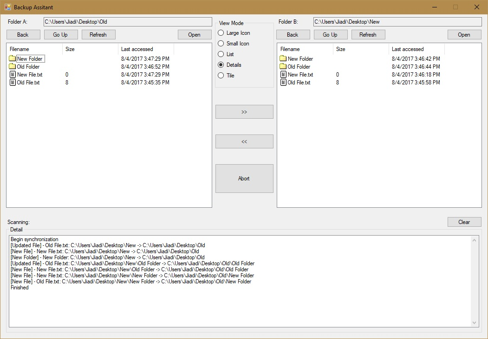

This is a 3D game that I made in Unity Engine. It's a shoot'em up game with a very simple mechanic. I followed the Unity tutorial and made it in two days.
In the tutorial, the space ship is equipped with only one cannon. I added a simple level system so that the player gets extra cannons as the game proceeds.
For people that prefer to store the backups in a portable hard drive, each time you copy the entire folder to update the backup, you always have to decide: should it be replaced? To make a careful decision, you literally have to go through all files in your computer and the backup. It slows down the backup process. But, that's no longer the case.
With the help of Backup Assitant, you are free from that concern. You only need to select two folders and click start. This application compares the two folders and automatically store new and updated files in the backup.